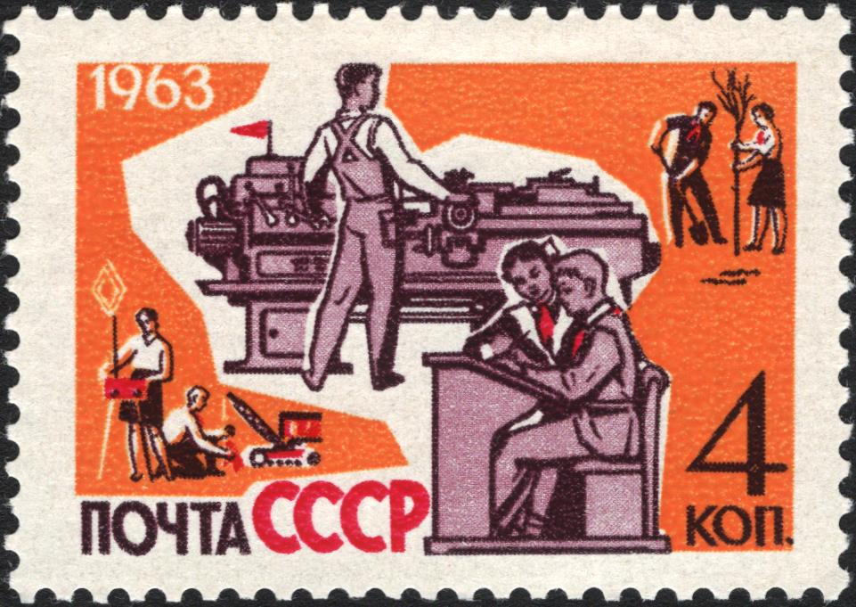
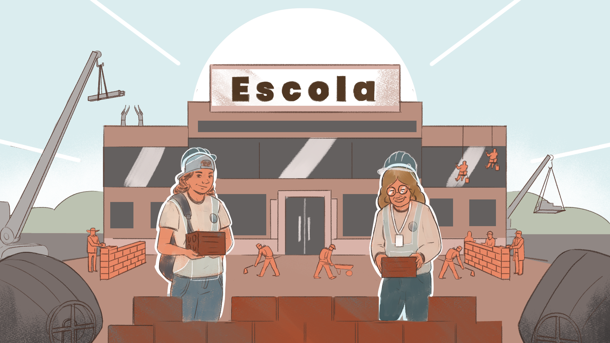

A politecnia como alternativa à gestão escolar neoliberal
No primeiro capítulo, vimos que o uso de termos para designar processos administrativos e as concepções educativas subjacentes a eles são resultados de lutas e embates sociais. Por exemplo, consolidaram-se visões sobre a escola atreladas à conservação dos princípios gerais do modo de produção capitalista. De fato, como vimos, as estruturas sociais, acionam aparelhos e instituições específicas para reproduzi-las. Para pensar outros tipos de instituições, é necessário projetar formas alternativas de organização da sociedade, processo que impõe, inevitavelmente, disputas de perspectivas. Por exemplo, a partir disso, originou-se a ideia de formação humana integral de natureza politécnica, para tratar de um modelo educacional que articula trabalho, ciência e cultura.

Título: Bem-estar infantil na Escola Politécnica
Fonte: Shmidshtein (1963).
Essa concepção remonta justamente a intensos processos de lutas sociais e enfrentamento da exploração capitalista. Em linhas gerais, podemos identificar em três grandes momentos históricos os elementos de um programa educativo baseado na politecnia: 1) décadas de 1860 e 1870, incluindo a Comuna de Paris (1971) e as elaborações de relativas àquele período; 2) a Revolução Russa (1917); e 3) as lutas antifascistas, com destaque especial para as elaborações do italiano . Princípios expostos em todos esses momentos foram adotados como pontos de partida para posteriores amadurecimentos, no seio do pensamento progressista em diversos outros países. Um bom resumo é trazido pelo próprio Marx em um texto do primeiro período citado:
Por educação entendemos três coisas:
Primeiramente: Educação mental.
Segundo: Educação física, tal como é dada em escolas de ginástica e pelo exercício militar.
Terceiro: Instrução tecnológica, que transmite os princípios gerais de todos os processos de produção e, simultaneamente, inicia a criança e o jovem no uso prático e manejo dos instrumentos elementares de todos os ofícios.
Um curso gradual e progressivo de instrução mental, gímnica e tecnológica deve corresponder à classificação dos trabalhadores jovens
A perspectiva que se baseia nessa tríade deve comportar formas particulares de administrar seus problemas, seus objetivos e seus recursos, questões que foram postas em prática ao longo da história pelas mais diversas experiências e no seio das respectivas disputas. Um dos responsáveis por essa tarefa na Rússia revolucionária, de 1917, é , que disse que não existia manual já acabado para a organização das funções escolares e que a própria construção de uma nova sociedade indicaria os caminhos necessários.
É possível afirmar que há um elemento comum às experiências de administração das escolas politécnicas já desenvolvidas nesses mais de cem anos: a participação popular com auto-organização coletiva. Este é, de acordo com Pistrak (2018 [1925]), o princípio radicalmente democrático que define os rumos de uma escola desvinculada do grande poder econômico e vinculada, prioritariamente, aos interesses dos trabalhadores. Recomendamos que você assista ao vídeo “A Escola do Trabalho de Moisey Pistrak e o Politecnismo de Viktor Shulgin.”

Título: Escola dos trabalhadores
Fonte: Prosa (2025m).
O tema é fundamental porque nele deságuam diversos outros desafios da construção do espaço escolar: organização democrática (e não burocrática) do trabalho, laicidade, liberdade de opinião, disciplina, princípios sociais e coletivos subordinando o individualismo, convivência entre grupos sociais diversos etc.
A auto-organização coletiva da escola não significa a ausência de um órgão diretivo e coordenador das atividades: ao contrário, como em qualquer instituição, a divisão de funções é essencial para que seja possível aferir o cumprimento dos objetivos e, principalmente, para que haja formas de estímulo dos interesses das crianças, jovens e aprendizes em geral. Ocorre que, na escola politécnica, tais interesses são ampliados com o intuito de que a criatividade individual cumpra uma função para a sociedade, ao mesmo tempo em que o estudante aprende uma profissão e os princípios básicos da ciência e da cultura geral (Pistrak, 2018 [1925]).
Eis o cerne da ideia de politecnia aplicada à administração escolar que vamos destrinchar no próximo capítulo. Daí, advêm formas organizativas como, a exemplo, a assembleia, o conselho escolar, o grêmio estudantil, a direção e a coordenação pedagógica, todas subordinadas aos princípios gerais da educação integral e ao conteúdo de classe vinculado ao polo do trabalho na contradição capitalista fundamental.
Para Pistrak (2018 [1925]), os educandos devem participar ativamente desses órgãos, mas
“para trabalhar organicamente na construção da escola, para participar em todas as questões pedagógicas da escola (e não apenas domésticas)”
É interessante perceber como está em jogo uma concepção que vincula dialeticamente o individual ao coletivo, superando a meritocracia e a busca pela eficiência mercadológica que caracterizam a gestão neoliberal.
Meritocracia é um sistema em que as recompensas, sejam elas sociais ou profissionais, são atribuídas com base no mérito individual. Ou seja, no desempenho e resultados apresentados pelas pessoas individualmente. Seria o governo do mérito. Contudo, o sucesso nem sempre é consequência direta de ações individuais e nem todos partem do mesmo ponto. Não se podem ignorar as desigualdades estruturais e mascarar privilégios como forma de perpetuar as injustiças sociais e justificar a exclusão dos menos favorecidos. O sistema meritocrático favorece quem já possui recursos, apaga a dimensão coletiva e funciona como dominação simbólica.